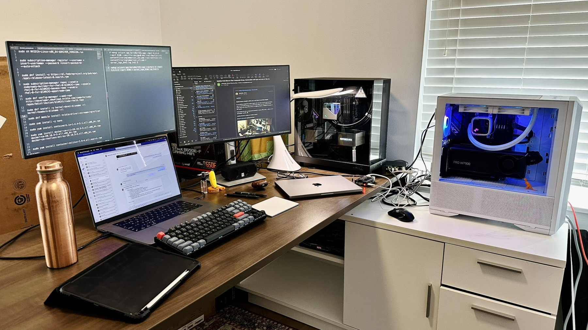

Home workstations
I built both workstations myself and use them for AI experiments, including running models locally.
NVIDIA system
- GPU
- NVIDIA 4090 · 24 GB
- Processor
- AMD Ryzen 9 7900X · Liquid cooled
- Memory
- 64 GB DDR5
AMD system
- GPU
- AMD Radeon Pro W7900 · 48 GB
- Processor
- AMD Ryzen 9 7900X · Liquid cooled
- Memory
- 64 GB DDR5